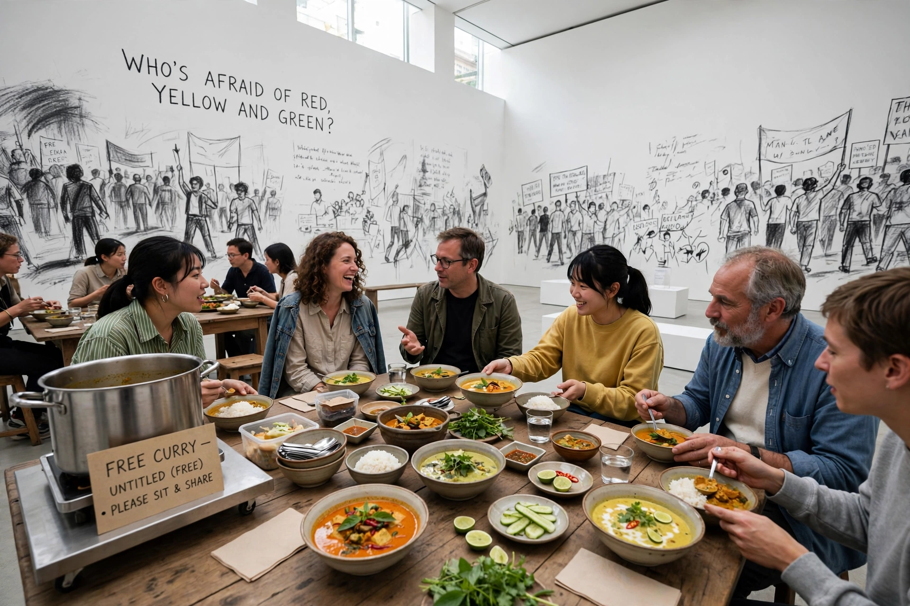

Rirkrit Tiravanija (born 1961) is a Thai contemporary artist residing in New York City, Berlin and Chiang Mai. He is known for installations that turn galleries into social spaces — most famously cooking and serving Thai curry or pad thai to visitors — and is a central figure in what critic Nicolas Bourriaud called relational aesthetics.

His breakthrough work Untitled (Free) (1992) at 303 Gallery in New York converted the gallery's office into a kitchen serving free food. Later works include full-scale replicas of his apartment open to visitors around the clock, ping-pong and communal cooking installations, and the collaborative land project The Land near Chiang Mai, Thailand, run with fellow artists as an experiment in self-sustainable living.
Tiravanija won the Hugo Boss Prize in 2004, with an accompanying Guggenheim Museum exhibition, and has exhibited at the Venice Biennale, the Serpentine Gallery and Tate Modern. He teaches at Columbia University School of the Arts.